Question 1 [4]
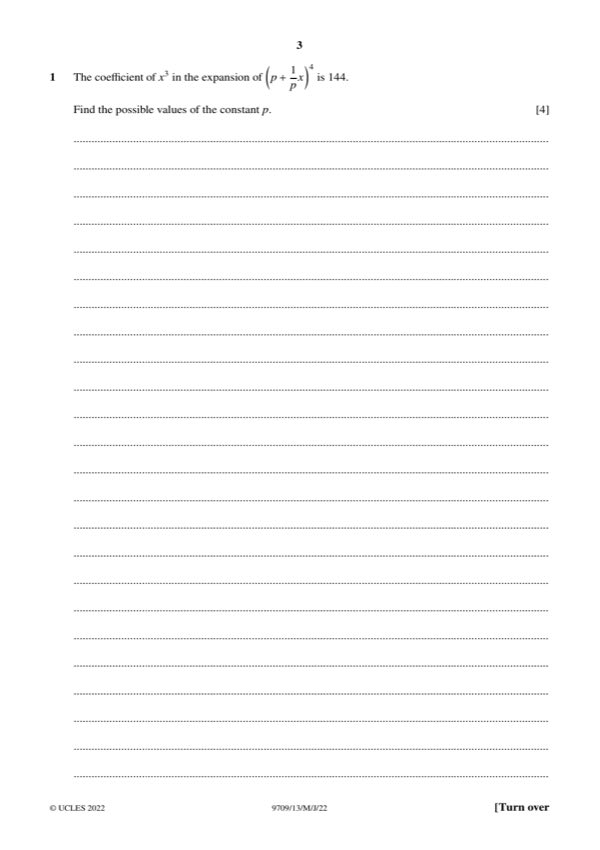
Original paper page 3
The coefficient of x³ in (p + x/p)⁴ is 144. Find the possible values of p.
Term with x³: C(4,3)·p·(x/p)³ = 4x³/p²
4/p² = 144 so p² = 1/36
p = ±1/6
Mathematics Paper 1 (Pure Mathematics 1)

The coefficient of x³ in (p + x/p)⁴ is 144. Find the possible values of p.
p = ±1/6
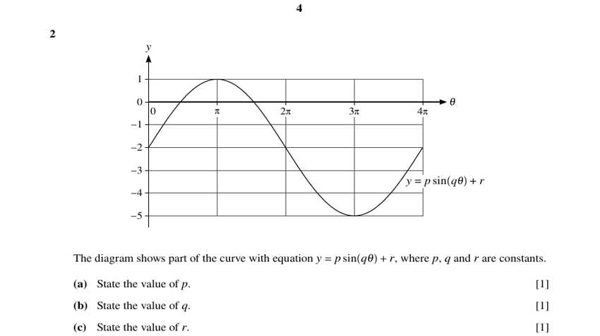
The graph shows y = p sin(qθ) + r. (a) State p. (b) State q. (c) State r.
(a) p = 3 (b) q = ½ (c) r = −2
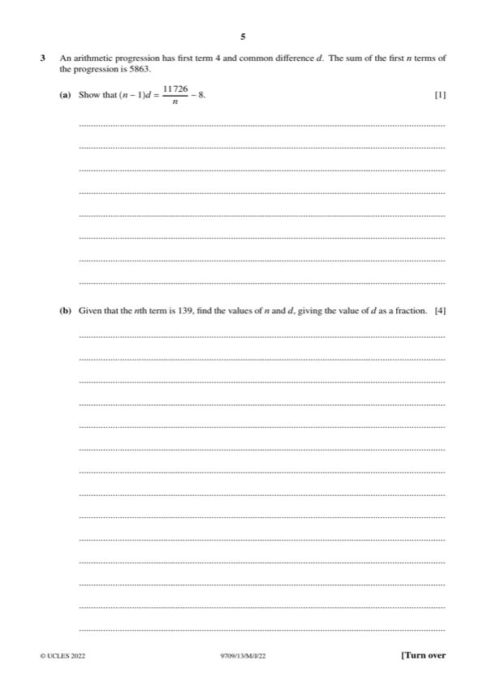
(a) [1] An AP has first term 4 and common difference d. The sum of the first n terms is 5863. Show that (n − 1)d = 11726/n − 8.
Shown
(b) [4] Given that the nth term is 139, find n and d (d as a fraction).
n = 82, d = 135/81 = 5/3
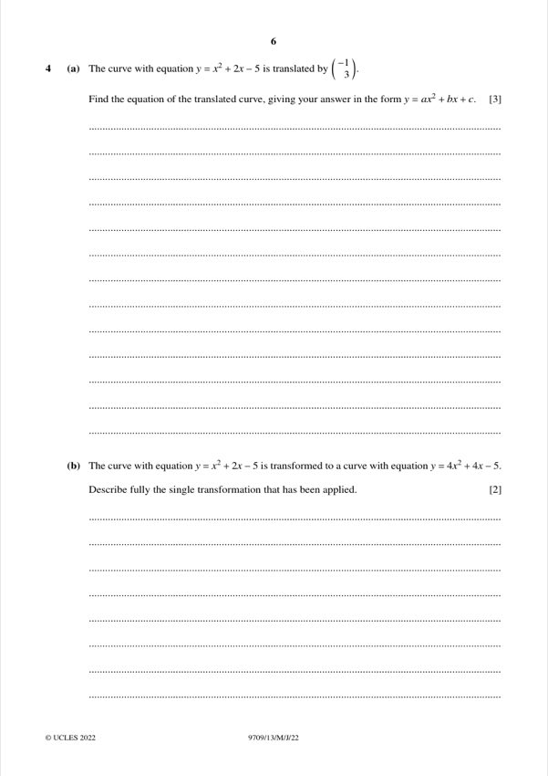
(a) [3] The curve y = x² + 2x − 5 is translated by (−1, 3). Find the equation of the translated curve.
y = x² + 4x + 1
(b) [2] The curve y = x² + 2x − 5 is transformed to y = 4x² + 4x − 5. Describe the transformation.
Stretch parallel to the x-axis, scale factor ½
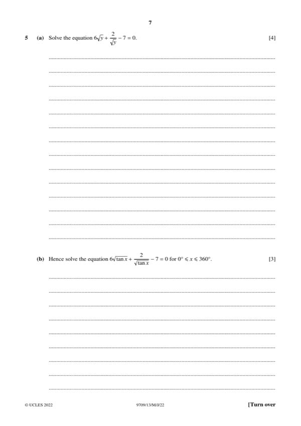
(a) [4] Solve 6√y + 2/√y − 7 = 0.
y = ¼ or y = 4/9
(b) [3] Hence solve 6√(tan x) + 2/√(tan x) − 7 = 0 for 0° ≤ x ≤ 360°.
x = 14.0°, 24.0°, 194.0°, 204.0°
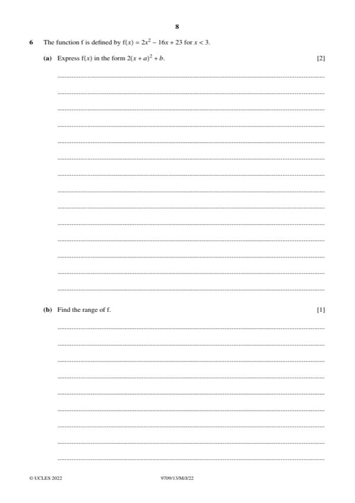
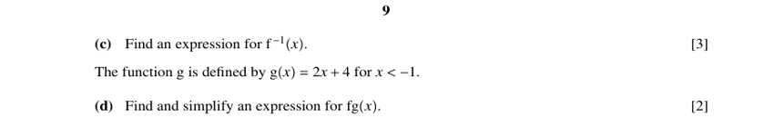
f(x) = 2x² − 16x + 23 for x < 3. (a) [2] Express f(x) in the form 2(x + a)² + b.
a = −4, b = −9
(b) [1] Find the range of f.
f(x) > −7
(c) [3] Find an expression for f⁻¹(x).
f⁻¹(x) = 4 − √((x + 9)/2)
(d) [2] g(x) = 2x + 4 for x < −1. Find and simplify fg(x).
fg(x) = 8x² − 9
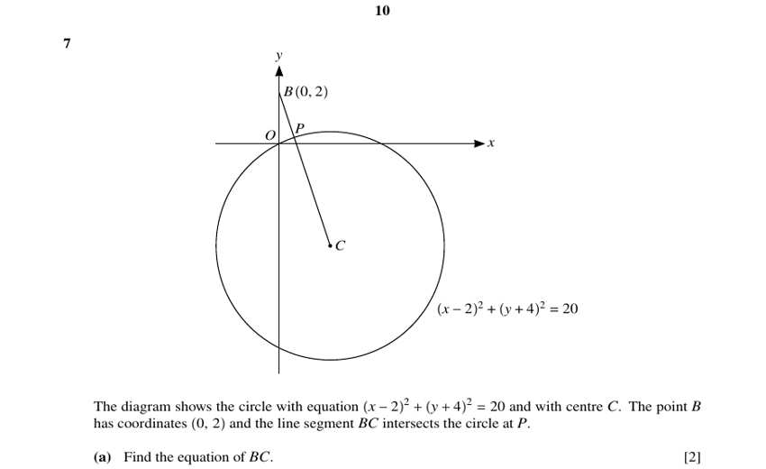
The circle (x − 2)² + (y + 4)² = 20 has centre C. B(0, 2). BC meets the circle at P. (a) [2] Find the equation of BC.
y = −3x + 2
(b) [5] Hence find the coordinates of P in exact form.
P(2 − √2, 3√2 − 4)
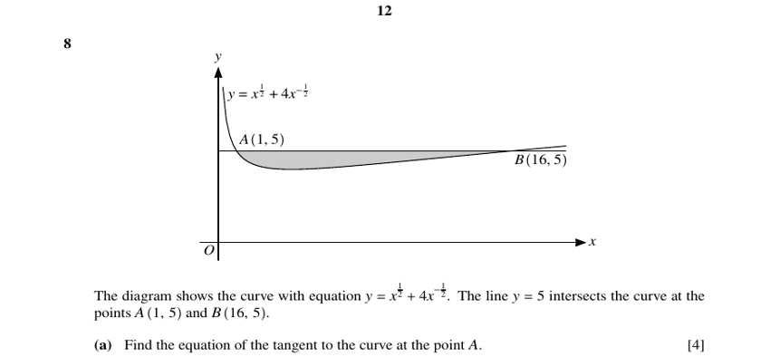
The curve y = x^½ + 4x^(−½) meets y = 5 at A(1, 5) and B(16, 5). (a) [4] Find the equation of the tangent at A.
y = −3x/2 + 13/2
(b) [4] Calculate the area of the shaded region between the curve and y = 5.
9
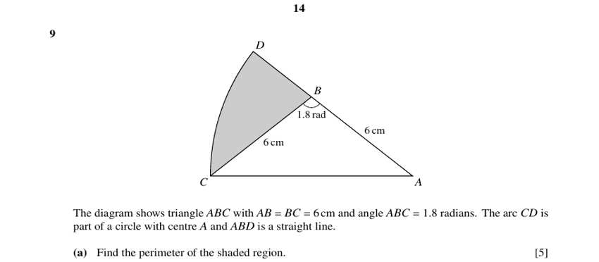
Triangle ABC with AB = BC = 6 cm and angle ABC = 1.8 rad. Arc CD is part of a circle centre A, and ABD is a straight line. (a) [5] Find the perimeter of the shaded region.
15.7 cm
(b) [3] Find the area of the shaded region.
12.1 cm²
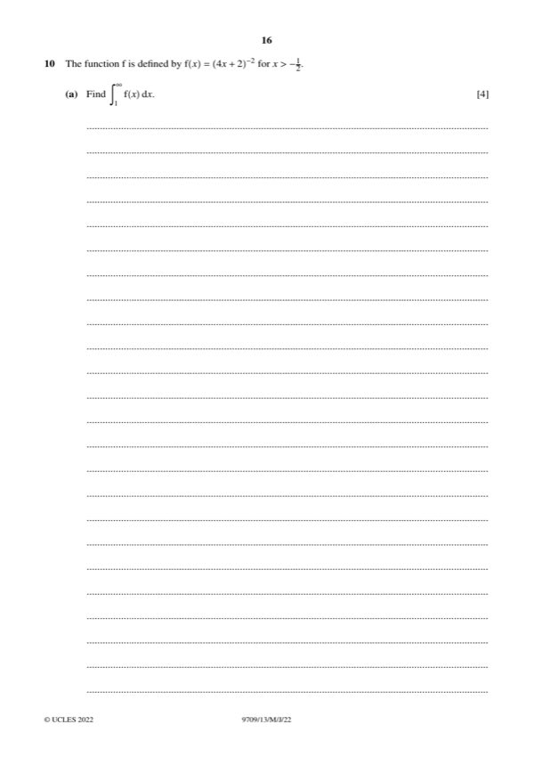
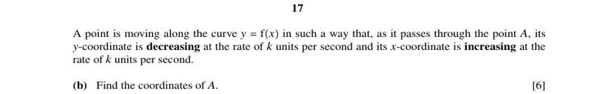
f(x) = (4x + 2)⁻² for x > −½. (a) [4] Find ∫ from 1 to ∞ of f(x) dx.
1/24
(b) [6] A point A is on y = f(x) such that dy/dt = −k and dx/dt = k. Find the coordinates of A.
A(0, ¼)
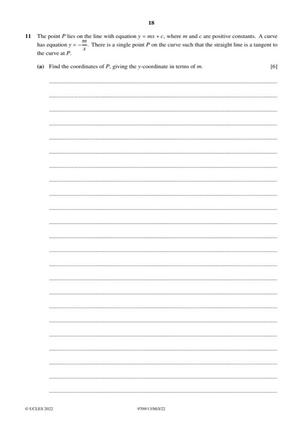
(a) [6] P lies on y = mx + c; the curve is y = −m/x; the line is a tangent to the curve at P. Find the coordinates of P.
P(−1, m)
(b) [4] The normal to the curve at P meets the curve again at Q. Find Q in terms of m.
Q(m², −1/m)